As fontes de energia são recursos naturais ou tecnológicos utilizados
para gerar energia para diversas finalidades, como a produção de
eletricidade, deslocamento de veículos, entre outros. Elas podem ser
classificadas em renováveis, que se renovam naturalmente no meio
ambiente, e não renováveis, que são finitas e demoram milhões de
anos para se formarem.
O que são energias renováveis?
Energias renováveis são fontes de energia obtidas de recursos naturais que se reconstituem rapidamente e não se esgotam com o uso. Elas são consideradas limpas e sustentáveis, pois causam menos impactos ambientais do que as fontes não renováveis.
Principais tipos de energias renováveis:
🔆Energia Solar: A energia solar é uma forma de energia renovável e limpa, captada através de painéis fotovoltaicos ou coletores solares térmicos, que pode ser utilizada para gerar eletricidade ou calor. Existem 2 tipos de energia solar: Fotovoltaica(usa a luz do sol) e térmica(Usa o calor do sol).
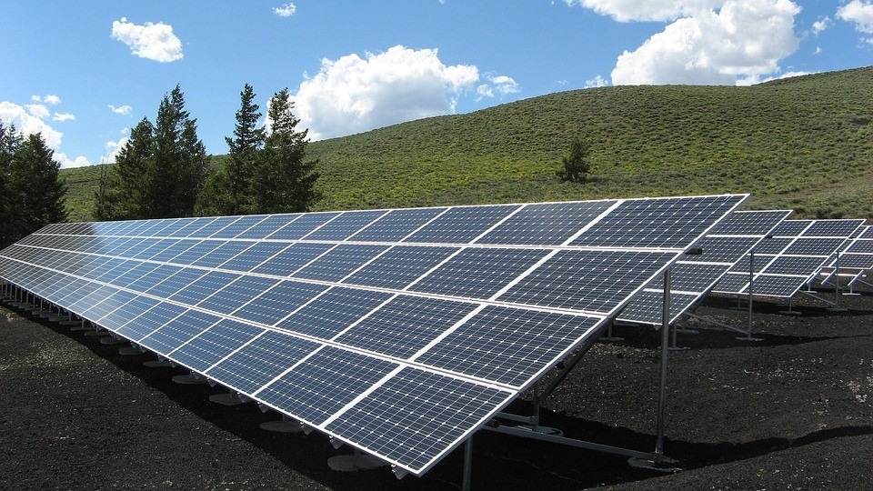 Energia solar fotovoltaica
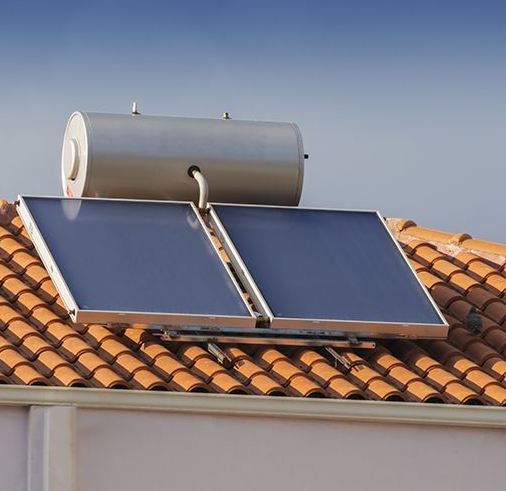 Energia solar térmica
💨Energia Eólica: A energia eólica é a energia gerada a partir da força do vento, utilizando aerogeradores (também conhecidos como turbinas eólicas) para converter a energia cinética do vento em eletricidade. É uma fonte renovável, limpa e abundante, com baixo impacto ambiental e custos cada vez mais competitivos.
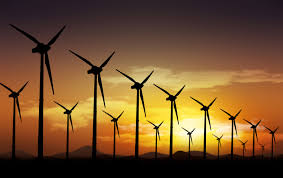 Turbinas terrestre
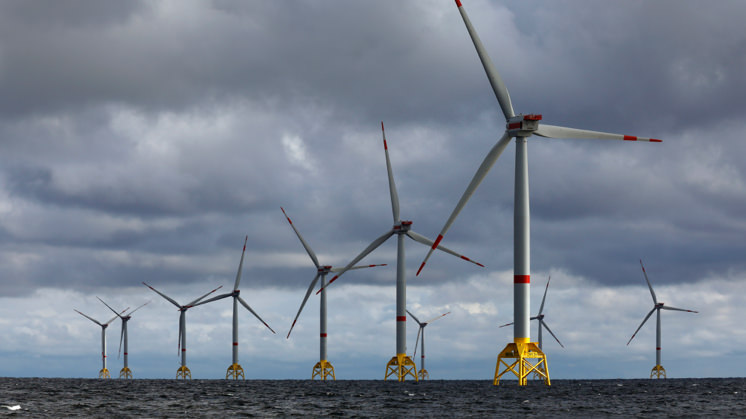 Turbinas marítimas
💧Energia Hidrelétrica:A energia hidrelétrica utiliza a energia potencial da água armazenada em represas ou barragens. Quando a água é liberada, ela passa por turbinas, que geram eletricidade através de um gerador.
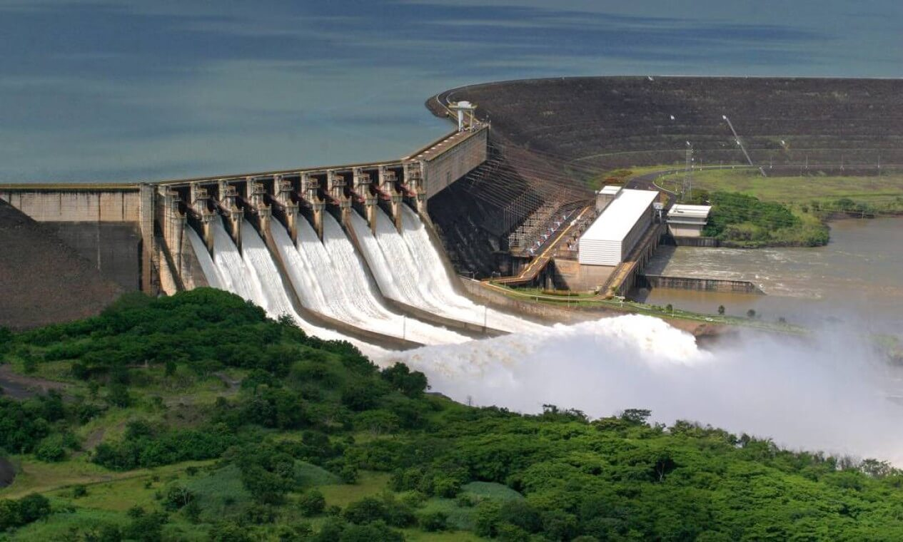 Usina hidrelétrica
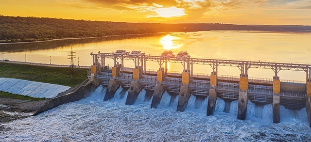 Usina hidrelétrica 2
🌱Biomassa: Biomassa refere-se à matéria orgânica de origem vegetal ou animal que pode ser usada como fonte de energia renovável. Essa matéria pode incluir resíduos agrícolas, florestais, industriais, além de materiais como cana-de-açúcar, madeira e até resíduos animais. A biomassa é uma alternativa sustentável aos combustíveis fósseis, pois se renova a curto prazo e pode ser utilizada na produção de energia elétrica, térmica e biocombustíveis.
🌋Energia Geotérmica: A energia geotérmica é uma fonte renovável de energia que utiliza o calor do interior da Terra para gerar eletricidade e/ou aquecimento. Essa energia é extraída através de poços profundos que acessam água quente e/ou vapor, que são então usados para girar turbinas ou aquecer sistemas de aquecimento.
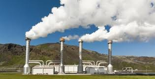 Central geotérmica
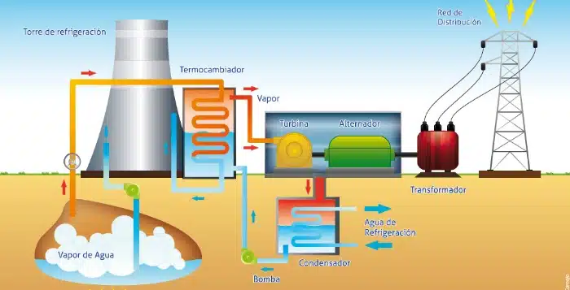 Central geotérmica(funcionamento)
🌊Ondomotriz: A energia das ondas ou ondomotriz, provém do aproveitamento das ondas oceânicas, ela é gerada a partir do movimento das ondas do mar. As ondas fazem mover turbinas ou dispositivos flutuantes, gerando eletricidade.
Braços mecânicos
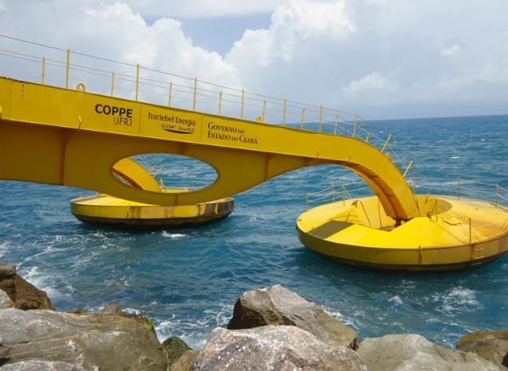 Braços mecânicos(proximo)
🌕🌊Energia das Marés (Maremotriz): A energia das marés, também conhecida como energia maremotriz, é uma forma renovável de energia obtida através do movimento das marés, que são variações no nível do mar causadas pela gravidade da Lua e do Sol. Essa energia pode ser aproveitada para gerar eletricidade, e é considerada uma fonte de energia limpa e sustentável.
♻️ Baixo impacto ambiental: Não emitem gases poluentes na produção de energia.
☀️ Disponibilidade natural: Sol, vento, água, etc., estão amplamente disponíveis.
💼 Geração de empregos: Impulsionam a economia verde.
🔒 Segurança energética: Reduzem a dependência de combustíveis fósseis.
Desvantagens
💸 Custo inicial elevado: Instalações como painéis solares ou turbinas eólicas exigem investimento.
🌤️ Intermitência: Produção depende das condições naturais (sol, vento, chuva).
🌾 Uso de espaço: Algumas fontes (como eólica ou biomassa) exigem grandes áreas.
🏞️ Impacto visual ou local: Ex: turbinas eólicas podem alterar paisagens ou afetar aves.
O que são energias não renováveis?
Energias não renováveis são aquelas obtidas de recursos naturais que existem em quantidades limitadas na Terra e demoram milhões de anos para se formar. Uma vez consumidas, não podem ser repostas em um curto período de tempo. Além disso sua exploração causa impactos ambientais como poluição e a emissão de gases do efeito estufa.
Principais tipos de energias não renováveis:
🛢️Petróleo: O petróleo é um combustível fóssil de origem orgânica, extraido de reservatórios subterrâneos e de alta densidade energética, amplamente utilizado na produção de combustíveis como gasolina, diesel e querosene, além de ser matéria-prima para a indústria petroquímica O petróleo é extraído de reservatórios subterrâneos e refinado para produzir combustíveis como gasolina, diesel e querosene, além de ser utilizado na indústria petroquímica para fabricar plásticos e outros produtos.
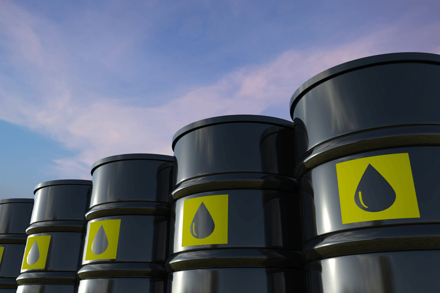 Barris de petróleo
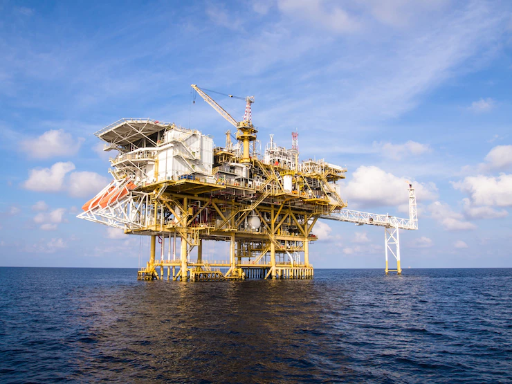 Plataforma petrolífera
🔥Carvão Mineral: O carvão mineral é uma rocha rica em carbono que, quando queimada, libera energia térmica. Essa energia é usada principalmente para gerar eletricidade e em processos industriais como a siderurgia. É uma das fontes de energia mais poluentes.
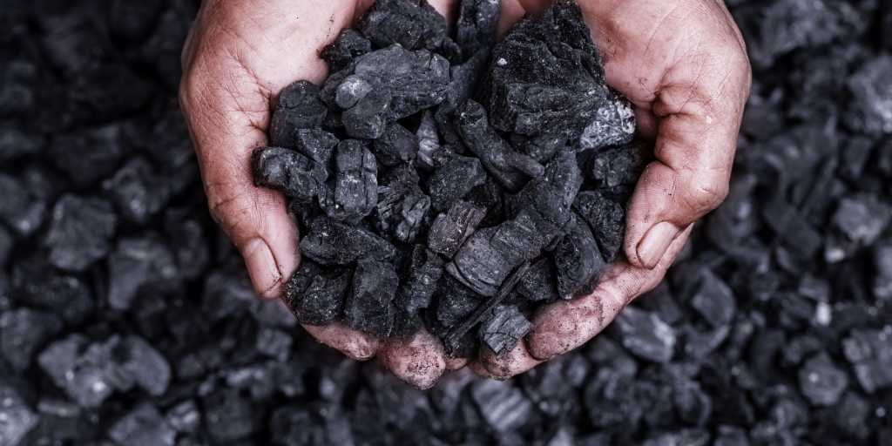 Carvão mineral
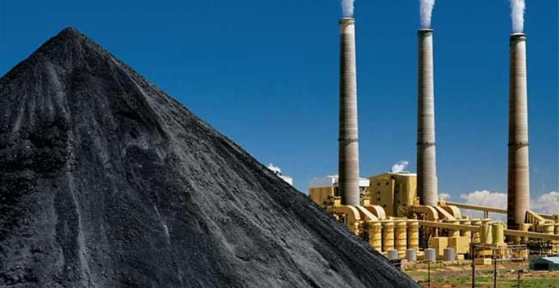 Monte de carvão e usina de energia
🏭Gás Natural: O gás natural é um combustível fóssil que se encontra em grandes depósitos subterrâneos. Ele é extraído e utilizado para geração de eletricidade, aquecimento, indústrias (como a de fertilizantes), cozinhas e usinas. Menos poluente que o carvão, mas ainda emite CO₂.
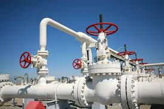 Gasodutos
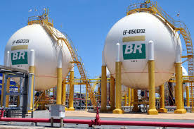 Reservatorios de gás natural
☢️Urânio (Energia Nuclear): O urânio é utilizado em reatores nucleares, onde ocorre o processo de fissão nuclear. Durante esse processo, o núcleo do átomo de urânio é dividido, liberando uma grande quantidade de energia térmica, que é convertida em eletricidade. Gera lixo radioativo e riscos em acidentes.
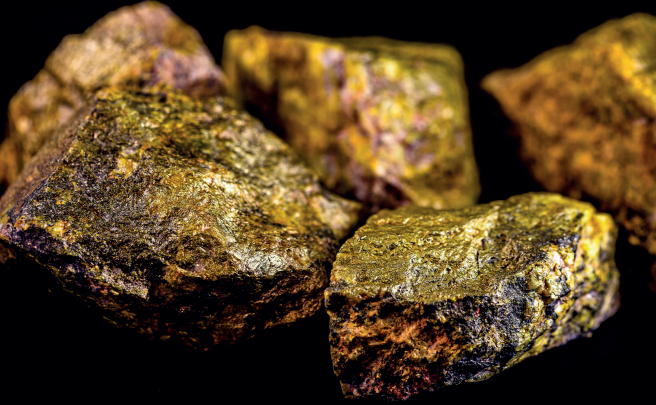 Urânio Usina nuclear
Vantagens
⚡ Alta eficiência energética: Produzem grandes quantidades de energia rapidamente.
🛠️ Tecnologia consolidada: Usinas e infraestrutura já estão prontas e são bem desenvolvidas.
💰 Custo inicial menor: São mais baratas para instalar do que muitas fontes renováveis (apesar do custo ambiental alto).
🏭 Capacidade de geração contínua: Não dependem de fatores naturais (como sol ou vento).
Desvantagens
🌍 Emissão de poluentes: Liberam gases como CO₂, CH₄, SO₂ e NOₓ — responsáveis pelo efeito estufa, chuva ácida e aquecimento global.
🛑 Fonte esgotável: Um dia acabarão — são limitadas.
☢️ Riscos ambientais sérios: Vazamentos de petróleo, acidentes nucleares, desmatamento para mineração, etc.
🌫️ Problemas de saúde pública: Poluição do ar e da água afeta populações próximas às usinas e minas.
Sustentabilidade energética
🔶 Relação entre energia e meio ambiente:
A geração de energia está diretamente ligada ao meio ambiente.
Fontes não renováveis emitem gases poluentes e contribuem para
o aquecimento global, enquanto fontes renováveis têm menor impacto
ambiental e são mais seguras para o planeta.
🔶 ODS - Objetivos de Desenvolvimento Sustentável (ONU) e Energia:
O Objetivo 7 dos ODS trata de "Energia acessível e limpa".
Ele incentiva a expansão das energias renováveis e a
melhoria da eficiência energética, especialmente em países
em desenvolvimento
🔶 Transição energética:
A transição energética é a mudança gradual do uso de fontes
fósseis para fontes limpas e renováveis. Envolve o uso de
tecnologias sustentáveis, eletrificação do transporte e
redução das emissões de gases poluentes.
🔶 Políticas públicas e acordos internacionais:
Acordo de Paris (2015): Compromisso global de reduzir emissões e combater as mudanças climáticas.
Políticas nacionais: Incentivos a energia solar, eólica e biocombustíveis (como no Brasil com o RenovaBio).
Investimentos verdes: Financiamentos e subsídios para fontes sustentáveis e eficiência energética.
Comparação entre energia sustentável e não sustentável
Comparação - Energia sustentável e não sustentavel
Critério
Energia Sustentável
Energia Não Sustentável
Impacto social
Gera empregos verdes, menos poluição
Pode causar doenças respiratórias, desastres ambientais
Efeito estufa
Baixa emissão de gases
Alta emissão (CO₂, CH₄, SO₂)
Sustentabilidade
Renovável e de baixo impacto
Recursos finitos e poluentes
Custo a longo prazo
Alto no início, mas econômico com o tempo
Mais barata no curto prazo, mas poluente e instável
Disponibilidade
Depende de fatores naturais (sol, vento)
Disponível continuamente, mas limitada e esgotável
Situação atual no Brasil e no mundo
🔶 Matrizes energéticas
Brasil: A matriz energética brasileira é uma das mais limpas do mundo, com grande participação de fontes renováveis como hidrelétricas, biomassa e energia eólica.
Mundo: A maioria dos países ainda depende fortemente de combustíveis fósseis, mas há avanços nas fontes renováveis.
🔶 Países líderes em energia renovável
🇧🇷 Brasil: Líder em energia hidrelétrica e etanol.
🇳🇴 Noruega: Quase 100% da eletricidade vem de fontes renováveis.
🇩🇪 Alemanha: Grande investimento em solar e eólica.
🇨🇳 China: Maior capacidade instalada de energia solar e eólica do mundo.
🇮🇸 Islândia: Quase toda a energia vem de fontes geotérmicas e hidrelétricas.
Curiosidades
🏞️ A primeira usina hidrelétrica do mundo foi construída em 1882, em Wisconsin (EUA). Ela gerava energia para... uma serraria!
☀️ O Sol envia em 1 hora mais energia à Terra do que toda a humanidade consome em 1 ano. Só falta aproveitarmos melhor.
🌬️ A energia eólica já era usada há mais de 2.000 anos — os antigos persas usavam moinhos de vento para bombear água e moer grãos.
🌋 A Islândia gera quase toda a sua energia elétrica com fontes renováveis — principalmente geotérmica e hidrelétrica.
🦠 Bactérias e algas estão sendo estudadas como fontes de energia renovável para o futuro, por meio da produção de biocombustíveis.
🚗 O primeiro carro movido a eletricidade surgiu em 1830 — muito antes dos motores a combustão se popularizarem.
🇧🇷 O Brasil é o segundo maior produtor mundial de etanol, atrás apenas dos Estados Unidos, e um dos únicos a usar cana-de-açúcar como matéria-prima.
🧪 A fusão nuclear, fonte de energia das estrelas, ainda está sendo estudada como uma alternativa limpa e quase ilimitada — mas ainda não é viável comercialmente.
🌊 A energia das marés (maremotriz) depende da gravidade da Lua e do Sol — um exemplo literal de como o cosmos influencia nosso cotidiano energético.
🧾 A maior parte da eletricidade desperdiçada no mundo acontece nas perdas durante a transmissão e distribuição, não no consumo direto.
Glossário
Combustão: Reação com oxigênio que libera energia.
Biocombustível: Combustível feito de matéria orgânica.
Reação química: Transformação de substâncias.
Fotossíntese: Processo onde plantas produzem energia usando a luz do sol.
Biomassa: Matéria orgânica usada como fonte de energia.
Efeito estufa: Fenômeno natural que aquece a Terra, mas pode ser intensificado por gases poluentes.
Transição energética: Processo de mudança de fontes fósseis para renováveis, visando sustentabilidade.
ODS (Objetivos de Desenvolvimento Sustentável): Metas globais da ONU para promover um futuro melhor e mais sustentável. 17 ao todo.
Eficiência energética: Uso da energia de forma econômica e inteligente, evitando desperdícios.
Sustentabilidade: Capacidade de atender às necessidades do presente sem comprometer o futuro do planeta.
Videoaula
Sobre a pagina
Essa página foi feita através da cooperação entre os devs Prefeito, Meu Sigma e Loud Mito com o intuito de criar uma página resumo sobre o tema "fontes de energia", e assim ajudar aqueles que querem estudar sobre o assunto.